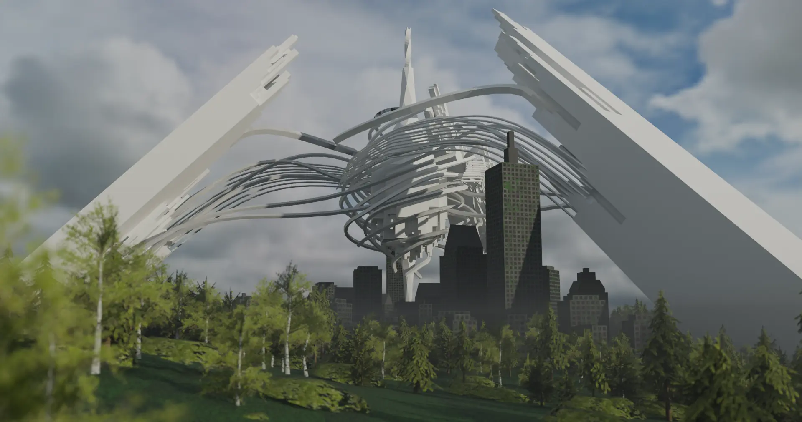
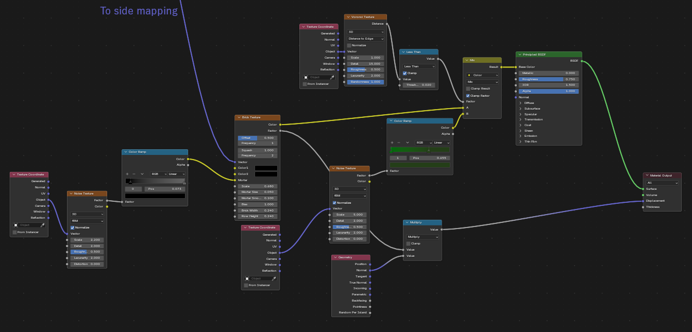
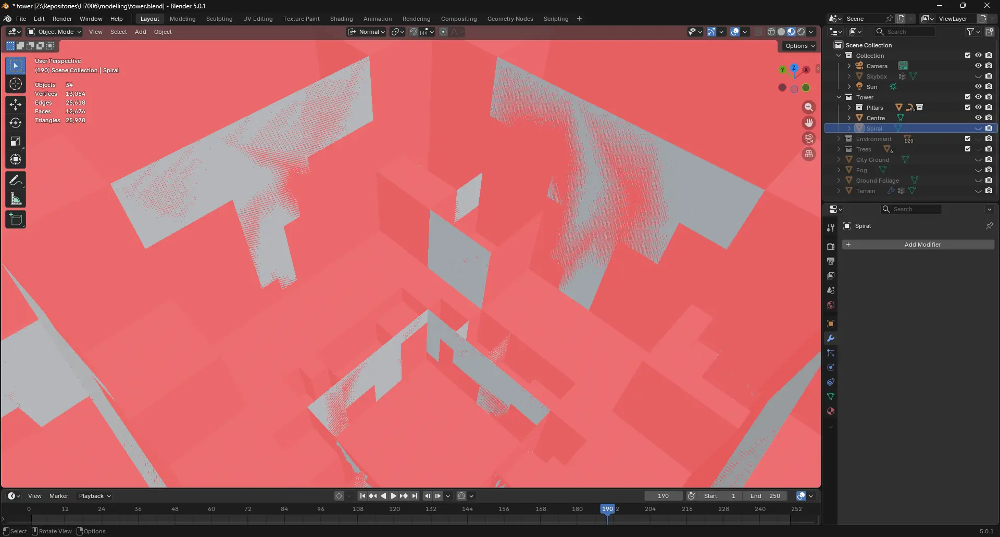

Summary
The final megastructure I modelled The Tower from Square Enix's NieR: Automata. The Tower was the model I was most worried about creating, as unlike the other two megastructures it features hundreds of graceful, organic curves. A stark difference from the the mostly geometric shapes of the Citadel and Iterator. However, I was able to overcome these challenges and now I consider the Tower to be my favourite model of the three. You can see the high quality render of the model in figure 1 below, which is used on the home page. For this render I used some tree assets by Vova Truestory on Sketchfab.

Modelling
To create this model I used the 3D modelling software Blender. For reference I used some screenshots of the ingame model extracted by Twitter user @ThreeEyedGemini. As the third model that I made, I felt confident to use many modifiers to achieve the Tower's look. I started by making the central tower, which I made by applying Blender's "Screw" modifier to a hexagon profile. This created the twisted look that the tower is known for. I progressively scaled edge loops of this central tower to increase its width in the center. I then created the three large pillars by subdiving the the top faces and selectively extruding it to give that iconic voxelised look. The pillars were then duplicated using Blender's "Array" modifier to create the other two pillars.
The final, and most important step was to add the long curves connecting the pillars to the central tower. To achieve this, I used Blender's Bézier curve feature to create the shape I wanted, and the "Curve to Tube" modifier to give the curves a 3D shape. This was very successful in achieving the look I wanted, and was a lot easier than trying to achieve the same result with basic extrusion techniques. Once the curves were in place, I merged them with the pillar geometry using the "Geometry Input" modifier. This resulted in the curves being duplicated by the array modifier, which effectively tripled the amount of curves I had, decreasing the amount of work I had to do.
Texturing
The Tower itself is a pure white colour, so I did not have to worry about texturing the main structure. However, I wanted to add the surrounding city to give the model's scale more context. To achieve I created a collection of skyscrapers using basic extrusion and subdivision tools. However, these new buildings needed textures. To fulfil this requirement, I used Blender's powerful Shader Node system to create procedural textures for the city, seen in figure 3. This used the "Brick Texture" node to create windows, which by default only maps itself onto the top surface of an object. As a result some extra nodes were needed to make every side appear as if it were the top. The events of NieR: Automata take place in the distant future after humanity has been driven to extinction, as a result there are large vines growing over the city. To achieve this, I used the "Voronoi Texture" node to create interconnecting lines which I used as a mask to overlay a green colour.
Unfortunately, three.js does not support procedural shaders created in Blender and so I had to use
Blender to "bake" the shader into a regular image texture which could then be used in three.js. This
baking process uses a 4096x4096 image which was made the model very large. This is what
led me to set up the GLTF compression settings talked about on the general tab.

Interactivity

Deciding what interactivity to add to The Tower was no easy task. Unlike with the other megastructures, there was no obvious choice and so I decided to do a rigidbody simulation of the Tower collapsing. This is something that happens at the very end of the game, and so it felt fitting to add.
While preparing for the physics simulation, I encountered many challenges while. Due to my inexperience with modelling in Blender, I had created a lot of non-manifold geometry. This is was caused by my extrusion for creating the pillars earlier, which had left interior faces at every extrusion, seen in figure 4. This was a problem as the process needed all objects to be manifold and so I had to fix my mesh. I first tried to manually fix the mesh by deleting the interior faces, but there were so many and they were all interconnected making this unviable. However, I was able to use Blender's "Remesh" modifier to repair the mesh. The modifier works by recreating the geometry of the model using voxels, which was fine as that is the aesthetic I was going for anyway.
In order to make the Tower collapse into lots of small pieces, I used Blender's Cell Fracture add-on. Which provides a powerful way to break up manifold geometry into smaller pieces. The last step was to set up the rigidbody simulation, which was a simple process thanks to Blender's powerful physics engine. I baked the final into normal keyframes which allowed me to export the animation as part of the GLTF file and play it back in three.js along with a sound effect by Freesound Community.
Unfortunately the process of fracturing the model into hundreds of pieces and then baking the physics simulation made the GLTF file slightly laggy in the browser. While the polygon count of the model only increased by around 1,500 faces, the number of draw calls increased dramatically as each piece of the fractured model is a separate mesh. As a result I had to disable shadows on this page to keep the framerate at an acceptable level.